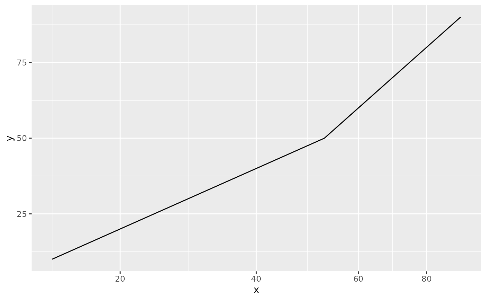

R/transform.R
transform_warp.RdWarping gives each interval between successive warp points the same width,
however much of the scale it actually covers. Warp point i is placed at
position i, and values in between are placed by linear interpolation with
stats::approx(): a value one third of the way between two warp points is
drawn one third of the way between their positions. Every interval is
therefore exactly one unit wide, so wide intervals are compressed and narrow
ones stretched.
transform_warp(warps)A <transform> object, suitable for the transform argument of
ggplot2::scale_x_continuous() or scale_x_mixtime().
Values outside the range of warps cannot be placed, and become NA. Because
panels are drawn with their range expanded beyond the data, warps should
extend past the data on both sides rather than merely cover it.
warps should be of a type compatible with the data being warped: a time
vector to warp time, or a numeric vector to warp a numeric scale.
Warping is particularly useful for time series, where the intervals of a granularity are often unequal: calendar months span 28 to 31 days, so a daily series drawn on a linear axis gives February less width than March. Warping at month boundaries removes that unevenness, making months comparable at a glance and putting each month's gridlines at a regular spacing.
Warp points need not share the data's granularity: they are converted to the data's chronon before being compared with it, so monthly warp points can place daily observations.
Warping does change the granularity of the scale to that of warps, with time
points becoming continuous positions within that chronon rather than whole
units of it. Breaks and labels follow suit, so a monthly warp labels its axis
in months: a day in mid January is month 612.5, which mixtime prints as
2021 Jan 50.0%. Fractions track the real calendar, so 613.5 is the midpoint
of 28 day February and 614.5 the midpoint of 31 day March.
library(ggplot2)
# Warp points need not be evenly spaced. A straight line makes the effect
# obvious: it kinks at x = 50, where the intervals change from 25 wide to 50
# wide, halving the slope from there on.
ggplot(data.frame(x = 10:90, y = 10:90), aes(x, y)) +
geom_line() +
scale_x_continuous(transform = transform_warp(c(0, 25, 50, 100)))

# Daily pedestrian counts for the first quarter of 2021: busy on weekdays,
# much quieter at the weekend, drifting upwards over the quarter.
pedestrians <- data.frame(
date = mixtime::date("2021-01-01") + 0:89,
count = round(
ifelse(seq_along(date) %% 7 %in% c(2, 3), 4500, 12000) +
cumsum(rnorm(length(date), 15, 150)) +
rnorm(length(date), 0, 700)
)
)
#> Error in `method(vec_cast_unsafe, list(class_any, class_any))`(x = structure(18628:18717, class = c("mixtime::mt_linear", "mixtime::mt_time", "mt_time_data", "S7_object"), S7_class = structure(function (.data = integer(), chronon = mt_unit(1L)) S7::new_object(mt_time(.data = .data, chronon = chronon)), name = "mt_linear", parent = structure(function (.data = integer(), chronon = mt_unit(1L)) S7::new_object(new_mt_time_data(.data = .data), chronon = chronon), name = "mt_time", parent = structure(list( class = "mt_time_data", constructor = function (.data = integer()) { structure(.data, class = "mt_time_data") }, validator = function (self) { if (!is.numeric(self)) { cli::cli_abort("{.var self} must be an integer or double vector.", call. = FALSE) } }), class = "S7_S3_class"), package = "mixtime", properties = list( chronon = structure(list(name = "chronon", class = structure(function (n = 1L) { n S7::new_object(S7::S7_object(), n = n) }, name = "mt_unit", parent = structure(function () { .Call(S7_object_) }, name = "S7_object", properties = list(), abstract = FALSE, constructor = function () { .Call(S7_object_) }, validator = function (self) { if (!is_S7_type(self)) { "Underlying data is corrupt" } }, class = c("S7_class", "S7_object")), package = "mixtime", properties = list( n = structure(list(name = "n", class = structure(list( classes = list(structure(list(class = "integer", constructor_name = "integer", constructor = function (.data = integer(0)) .data, validator = function (object) { if (base_class(object) != name) { sprintf("Underlying data must be <%s> not <%s>", name, base_class(object)) } }), class = "S7_base_class"), structure(list( class = "double", constructor_name = "double", constructor = function (.data = numeric(0)) .data, validator = function (object) { if (base_class(object) != name) { sprintf("Underlying data must be <%s> not <%s>", name, base_class(object)) } }), class = "S7_base_class"))), class = "S7_union"), getter = NULL, setter = NULL, validator = NULL, default = 1L), class = "S7_property")), abstract = FALSE, constructor = function (n = 1L) { n S7::new_object(S7::S7_object(), n = n) }, class = c("S7_class", "S7_object")), getter = NULL, setter = NULL, validator = function (value) { if (length(value@n) != 1L) { "must wrap a single time granule (its `@n` must be length 1)" } }, default = mt_unit(1L)), class = "S7_property")), abstract = FALSE, constructor = function (.data = integer(), chronon = mt_unit(1L)) S7::new_object(new_mt_time_data(.data = .data), chronon = chronon), class = c("S7_class", "S7_object")), package = "mixtime", properties = list(chronon = structure(list( name = "chronon", class = structure(function (n = 1L) { n S7::new_object(S7::S7_object(), n = n) }, name = "mt_unit", parent = structure(function () { .Call(S7_object_) }, name = "S7_object", properties = list(), abstract = FALSE, constructor = function () { .Call(S7_object_) }, validator = function (self) { if (!is_S7_type(self)) { "Underlying data is corrupt" } }, class = c("S7_class", "S7_object")), package = "mixtime", properties = list( n = structure(list(name = "n", class = structure(list( classes = list(structure(list(class = "integer", constructor_name = "integer", constructor = function (.data = integer(0)) .data, validator = function (object) { if (base_class(object) != name) { sprintf("Underlying data must be <%s> not <%s>", name, base_class(object)) } }), class = "S7_base_class"), structure(list( class = "double", constructor_name = "double", constructor = function (.data = numeric(0)) .data, validator = function (object) { if (base_class(object) != name) { sprintf("Underlying data must be <%s> not <%s>", name, base_class(object)) } }), class = "S7_base_class"))), class = "S7_union"), getter = NULL, setter = NULL, validator = NULL, default = 1L), class = "S7_property")), abstract = FALSE, constructor = function (n = 1L) { n S7::new_object(S7::S7_object(), n = n) }, class = c("S7_class", "S7_object")), getter = NULL, setter = NULL, validator = function (value) { if (length(value@n) != 1L) { "must wrap a single time granule (its `@n` must be length 1)" } }, default = mt_unit(1L)), class = "S7_property")), abstract = FALSE, constructor = function (.data = integer(), chronon = mt_unit(1L)) S7::new_object(mt_time(.data = .data, chronon = chronon)), class = c("S7_class", "S7_object")), chronon = <object>), to = structure(list(), names = character(0), class = "data.frame", row.names = integer(0)), ...): Can't convert `x` <mixtime::mt_linear> to <data.frame>.
# Warp points extend a month either side of the data, because panels are drawn
# with their range expanded beyond it. They are monthly while the data is
# daily, which is fine: warp points are converted to the data's granularity.
month_starts <- mixtime::yearmonth("2020-12-01") + 0:5
# Without warping, the weekly cycle is evenly spaced but the month gridlines
# are not: 28 day February is drawn narrower than its 31 day neighbours.
ggplot(pedestrians, aes(date, count)) +
geom_line() +
scale_x_mixtime(breaks = month_starts + 0)
#> Error: object 'pedestrians' not found
# Warping at the start of each month evens out the gridlines, but the length
# of each day is adjusted: the 28 days of February and 31 days of January and
# March are stretched or compressed to the same width over the month.
ggplot(pedestrians, aes(date, count)) +
geom_line() +
scale_x_mixtime(
breaks = month_starts,
# + 0 indicates the start of each month (continuous time model)
transform = transform_warp(month_starts + 0)
)
#> Error: object 'pedestrians' not found